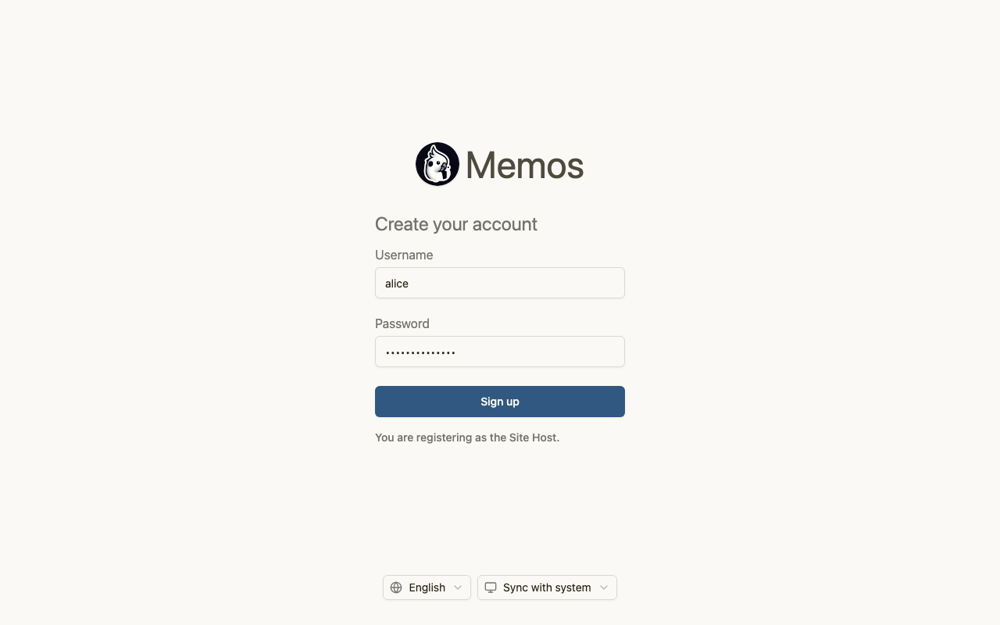
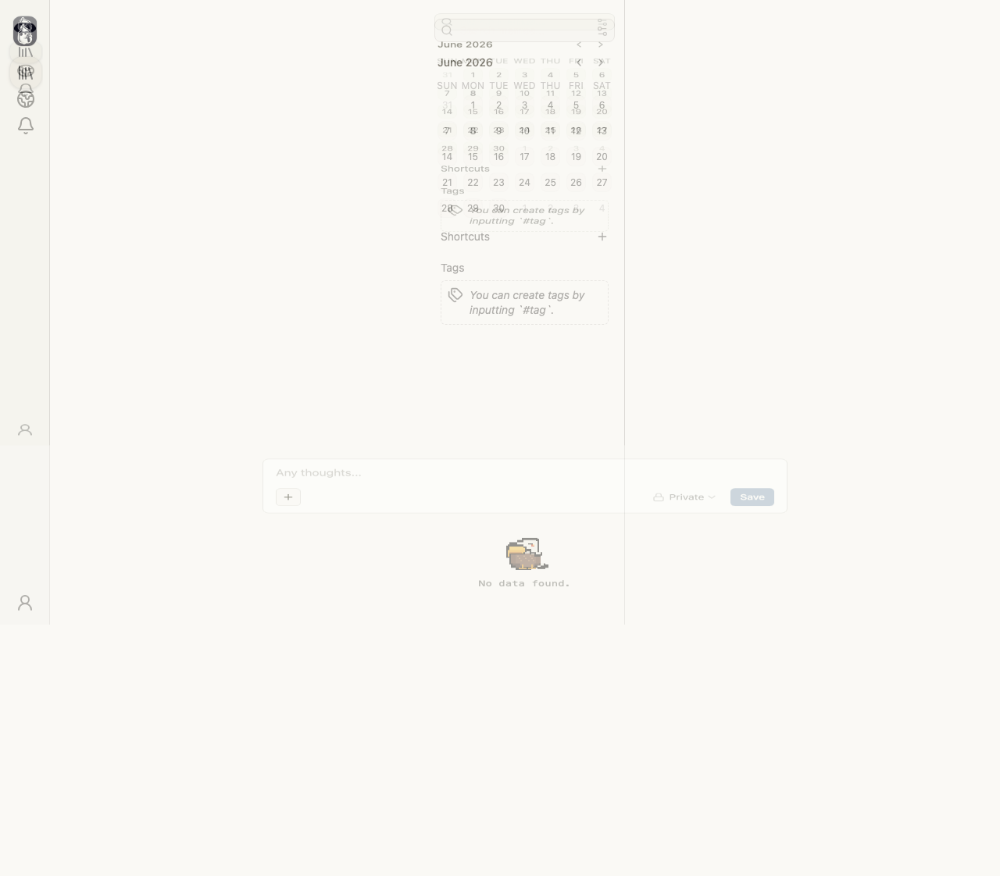

Dashboard layout is severely broken with overlapping and transparent elements
Goal
Verify that a user can successfully register as a Site Host and subsequently access the content creation menu by clicking the plus button.
Description
After successful registration and redirection to the dashboard, the UI is rendered in a broken state. The sidebar navigation icons are transparent and barely visible. The main content area (calendar, shortcuts, tags) is overlaid with a semi-transparent duplicate of itself, creating a ghosting effect. The 'No data found' message and input box are also affected by this transparency issue, making the interface unusable and unreadable.
Evidence
The 'AFTER' screenshot shows a dashboard where the sidebar icons are faded, and the central content panel appears to be duplicated and layered with low opacity, causing text and elements to overlap and become illegible. This is a clear rendering failure.
Reproduction steps
- Navigate to the signup page.
- Enter a username and password.
- Click the 'Sign up' button.
- Observe the resulting dashboard view.

